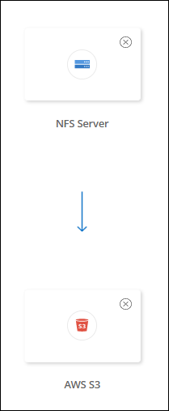
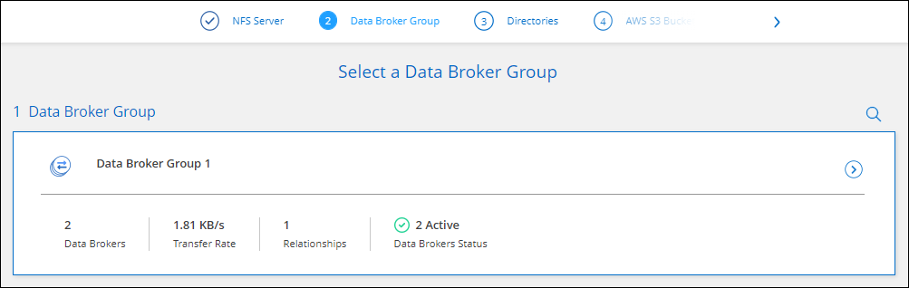

Dokumentationsänderungen beantragen
Dokumentationsänderungen beantragen In GitHub bearbeiten
In GitHub bearbeiten Leitfaden für Beitragende
Leitfaden für BeitragendeErstellung von Synchronisierungsbeziehungen
Beitragende
Wenn Sie eine Synchronisierungsbeziehung erstellen, kopiert der Cloud Sync-Dienst Dateien von der Quelle zum Ziel. Nach der ersten Kopie synchronisiert der Service alle 24 Stunden alle geänderten Daten.
Bevor Sie einige Arten von Synchronisierungsbeziehungen erstellen können, müssen Sie zunächst eine Arbeitsumgebung in BlueXP erstellen.
Erstellen von Synchronisierungsbeziehungen für bestimmte Arbeitsumgebungen
Wenn Sie Synchronisierungsbeziehungen für eines der folgenden Elemente erstellen möchten, müssen Sie zuerst die Arbeitsumgebung erstellen oder ermitteln:
-
Amazon FSX für ONTAP
-
Azure NetApp Dateien
-
Cloud Volumes ONTAP
-
ONTAP-Cluster vor Ort
-
Schaffen oder ermitteln Sie die Arbeitsumgebung.
-
Klicken Sie Auf Leinwand.
-
Wählen Sie eine Arbeitsumgebung aus, die einem der oben aufgeführten Typen entspricht.
-
Wählen Sie das Aktionsmenü neben Synchronisieren.

-
Wählen Sie Daten von diesem Standort oder Daten zu diesem Standort synchronisieren und folgen Sie den Anweisungen, um die Synchronisierungsbeziehung einzurichten.
Erstellung anderer Arten von Synchronisierungsbeziehungen
Verwenden Sie diese Schritte, um Daten zu einem anderen unterstützten Storage-Typ als Amazon FSX für ONTAP, Azure NetApp Files, Cloud Volumes ONTAP oder On-Premises-ONTAP-Cluster zu synchronisieren. Die folgenden Schritte zeigen ein Beispiel, wie eine Synchronisierungsbeziehung von einem NFS-Server zu einem S3-Bucket eingerichtet wird.
-
Klicken Sie in BlueXP auf Sync.
-
Wählen Sie auf der Seite * Synchronisierungsbeziehung definieren* eine Quelle und ein Ziel aus.
Die folgenden Schritte zeigen ein Beispiel für das Erstellen einer Synchronisierungsbeziehung von einem NFS-Server zu einem S3-Bucket.

-
Geben Sie auf der Seite NFS Server die IP-Adresse oder den vollqualifizierten Domänennamen des NFS-Servers ein, den Sie mit AWS synchronisieren möchten.
-
Folgen Sie auf der Seite Data Broker Group den Aufforderungen zur Erstellung einer virtuellen Maschine für den Datenvermittler in AWS, Azure oder Google Cloud Platform oder zur Installation der Datenvermittler-Software auf einem vorhandenen Linux-Host.
Weitere Informationen finden Sie auf den folgenden Seiten:
-
Klicken Sie nach der Installation des Datenmaklers auf Weiter.

-
Wählen Sie auf der Seite Directories ein Verzeichnis oder Unterverzeichnis auf oberster Ebene aus.
Wenn Cloud Sync die Exporte nicht abrufen kann, klicken Sie auf Export manuell hinzufügen und geben Sie den Namen eines NFS-Exports ein.

Wenn Sie mehr als ein Verzeichnis auf dem NFS-Server synchronisieren möchten, müssen Sie nach Abschluss der Synchronisierung weitere Synchronisierungsbeziehungen erstellen. -
Wählen Sie auf der Seite AWS S3 Bucket einen Bucket aus:
-
Drill-down zum Auswählen eines vorhandenen Ordners innerhalb des Buckets oder zum Auswählen eines neuen Ordners, den Sie innerhalb des Buckets erstellen.
-
Klicken Sie auf zur Liste hinzufügen, um einen S3-Bucket auszuwählen, der nicht mit Ihrem AWS-Konto verknüpft ist. "Spezifische Berechtigungen müssen auf den S3-Bucket angewendet werden".
-
-
Richten Sie auf der Seite Bucket Setup den Bucket ein:
-
Legen Sie fest, ob die S3-Bucket-Verschlüsselung aktiviert und dann einen AWS KMS-Schlüssel ausgewählt werden soll, den ARN eines KMS-Schlüssels eingeben oder die AES-256-Verschlüsselung auswählen soll.
-
Wählen Sie eine S3-Storage-Klasse aus. "Zeigen Sie die unterstützten Speicherklassen an".

-
-
legen Sie auf der Seite Settings fest, wie Quelldateien und Ordner synchronisiert und am Zielspeicherort verwaltet werden:
- Zeitplan
-
Wählen Sie einen wiederkehrenden Zeitplan für zukünftige Synchronisierungen aus oder deaktivieren Sie den Synchronisationsplan. Sie können eine Beziehung planen, um Daten bis zu alle 1 Minute zu synchronisieren.
- Sync Timeout
-
Legen Sie fest, ob Cloud Sync eine Datensynchronisation abbrechen soll, wenn die Synchronisierung in der angegebenen Anzahl an Stunden oder Tagen nicht abgeschlossen ist.
- Benachrichtigungen
-
Ermöglicht Ihnen die Auswahl, ob Sie Cloud Sync Benachrichtigungen im Benachrichtigungscenter von BlueXP erhalten möchten. Benachrichtigungen für erfolgreiche Datensynchronisation, fehlerhafte Datensynchronisation und stornierte Datensynchronisierungen sind möglich.
- Wiederholungen
-
Legen Sie fest, wie oft Cloud Sync versuchen soll, eine Datei zu synchronisieren, bevor Sie sie überspringen.
- Kontinuierliche Synchronisierung
-
Nach der ersten Datensynchronisierung überwacht Cloud Sync Änderungen am S3-Quell-Bucket oder Google Cloud Storage Bucket und synchronisiert kontinuierlich alle Änderungen am Zielspeicherort. Es ist nicht erforderlich, die Quelle in geplanten Intervallen erneut zu scannen.
Diese Einstellung ist nur verfügbar, wenn eine Synchronisierungsbeziehung erstellt wird und wenn Daten von einem S3-Bucket oder Google Cloud Storage zu Azure Blob Storage, CIFS, Google Cloud Storage, IBM Cloud Object Storage, NFS, S3, Und StorageGRID * oder* von Azure Blob Storage auf Azure Blob Storage, CIFS, Google Cloud Storage, IBM Cloud Object Storage, NFS und StorageGRID.
Wenn Sie diese Einstellung aktivieren, wirkt sich dies auf andere Funktionen wie folgt aus:
-
Der Synchronisierungszeitplan ist deaktiviert.
-
Die folgenden Einstellungen werden auf die Standardwerte zurückgesetzt: Sync Timeout, kürzlich geänderte Dateien und Änderungsdatum.
-
Wenn S3 die Quelle ist, ist der Filter nach Größe nur für kopierende Ereignisse aktiv (nicht bei Löschereignissen).
-
Nachdem die Beziehung erstellt wurde, können Sie die Beziehung nur beschleunigen oder löschen. Sie können die Synchronisierung nicht abbrechen, Einstellungen ändern oder Berichte anzeigen.
-
- Vergleich Von
-
Wählen Sie aus, ob Cloud Sync bestimmte Attribute vergleichen soll, wenn Sie feststellen, ob sich eine Datei oder ein Verzeichnis geändert hat und erneut synchronisiert werden soll.
Selbst wenn Sie diese Attribute deaktivieren, vergleicht Cloud Sync die Quelle immer noch mit dem Ziel, indem es die Pfade, Dateigrößen und Dateinamen überprüft. Falls Änderungen vorliegen, werden diese Dateien und Verzeichnisse synchronisiert.
Sie können festlegen, dass Cloud Sync aktiviert oder deaktiviert wird, indem Sie die folgenden Attribute vergleichen:
-
Mtime: Die letzte geänderte Zeit für eine Datei. Dieses Attribut ist für Verzeichnisse nicht gültig.
-
Uid, gid und Mode: Berechtigungsflaggen für Linux.
-
- Für Objekte kopieren
-
Aktivieren Sie diese Option zum Kopieren von Objekt-Storage-Metadaten und -Tags. Wenn ein Benutzer die Metadaten an der Quelle ändert, kopiert Cloud Sync dieses Objekt im nächsten Sync. Wenn ein Benutzer jedoch die Tags auf der Quelle ändert (und nicht die Daten selbst), kopiert Cloud Sync das Objekt nicht im nächsten Sync.
Sie können diese Option nicht bearbeiten, nachdem Sie die Beziehung erstellt haben.
Das Kopieren von Tags wird in Synchronisierungsbeziehungen unterstützt, einschließlich Azure Blob oder einem S3-kompatiblen Endpunkt (S3, StorageGRID oder IBM Cloud Objekt-Storage) als Ziel.
Das Kopieren von Metadaten wird durch „Cloud-to-Cloud“-Beziehungen zwischen folgenden Endpunkten unterstützt:
-
AWS S3
-
Azure Blob
-
Google Cloud Storage
-
IBM Cloud Objekt-Storage
-
StorageGRID
-
- Kürzlich geänderte Dateien
-
Wählen Sie diese Option aus, um Dateien auszuschließen, die vor der geplanten Synchronisierung zuletzt geändert wurden.
- Dateien auf Quelle löschen
-
Wählen Sie diese Option aus, um Dateien vom Quellspeicherort zu löschen, nachdem Cloud Sync die Dateien auf den Zielspeicherort kopiert hat. Diese Option schließt das Risiko eines Datenverlusts ein, da die Quelldateien nach dem Kopieren gelöscht werden.
Wenn Sie diese Option aktivieren, müssen Sie auch einen Parameter in der Datei local.json im Datenvermittler ändern. Öffnen Sie die Datei und aktualisieren Sie sie wie folgt:
{ "workers":{ "transferrer":{ "delete-on-source": true } } } - Dateien auf Ziel löschen
-
Wählen Sie diese Option aus, um Dateien vom Zielspeicherort zu löschen, wenn sie aus der Quelle gelöscht wurden. Standardmäßig werden keine Dateien vom Zielspeicherort gelöscht.
- Dateitypen
-
Definieren Sie die Dateitypen, die in jede Synchronisierung einbezogen werden sollen: Dateien, Verzeichnisse und symbolische Links.
- Dateierweiterungen ausschließen
-
Geben Sie Dateierweiterungen an, die vom Sync ausgeschlossen werden sollen, indem Sie die Dateierweiterung eingeben und Enter drücken. Geben Sie beispielsweise log oder .log ein, um *.log-Dateien auszuschließen. Für mehrere Erweiterungen ist kein Trennzeichen erforderlich. Das folgende Video enthält eine kurze Demo:
- Verzeichnisnamen Ausschließen
-
Geben Sie maximal 15 Verzeichnisse an, die von der Synchronisierung ausgeschlossen werden sollen, indem Sie ihren Namen eingeben und Enter drücken. Die Verzeichnisse .Copy-Offload, .Snapshot, ~Snapshot sind standardmäßig ausgeschlossen. Wenn Sie diese in Ihre Synchronisierung aufnehmen möchten, kontaktieren Sie uns.
- Dateigröße
-
Wählen Sie, ob alle Dateien unabhängig von ihrer Größe oder nur Dateien in einem bestimmten Größenbereich synchronisiert werden sollen.
- Änderungsdatum
-
Wählen Sie alle Dateien unabhängig vom letzten Änderungsdatum aus, Dateien, die nach einem bestimmten Datum, vor einem bestimmten Datum oder zwischen einem bestimmten Zeitraum geändert wurden.
- Erstellungsdatum
-
Wenn ein SMB-Server die Quelle ist, können Sie mit dieser Einstellung Dateien synchronisieren, die nach einem bestimmten Datum, vor einem bestimmten Datum oder zwischen einem bestimmten Zeitraum erstellt wurden.
- ACL – Access Control List
-
Kopieren Sie ACLs von einem SMB-Server, indem Sie eine Einstellung aktivieren, wenn Sie eine Beziehung erstellen oder nachdem Sie eine Beziehung erstellt haben.
-
Wählen Sie auf der Seite Tags/Metadaten, ob ein Key-Value-Paar als Tag auf allen Dateien gespeichert werden soll, die auf den S3-Bucket übertragen werden, oder um ein Metadaten-Key-Value-Paar auf allen Dateien zuzuweisen.


Diese Funktion ist auch zur Synchronisierung von Daten mit StorageGRID und IBM Cloud Object Storage verfügbar. Für Azure und Google Cloud Storage ist nur die Metadatenoption verfügbar. -
Überprüfen Sie die Details der Synchronisierungsbeziehung und klicken Sie dann auf Beziehung erstellen.
Ergebnis
Cloud Sync beginnt mit der Synchronisierung von Daten zwischen Quelle und Ziel.
Synchronisierungsbeziehungen aus Cloud-Daten Sense erstellen
Cloud Sync ist in Cloud Data Sense integriert. Aus Data Sense können Sie die Quelldateien auswählen, die Sie mit Cloud Sync an einem Zielspeicherort synchronisieren möchten.
Nachdem Sie eine Datensynchronisierung aus Cloud Data Sense initiiert haben, sind alle Quellinformationen in einem einzigen Schritt enthalten und müssen nur einige wichtige Details eingeben. Anschließend wählen Sie den Zielspeicherort für die neue Synchronisierungsbeziehung aus.